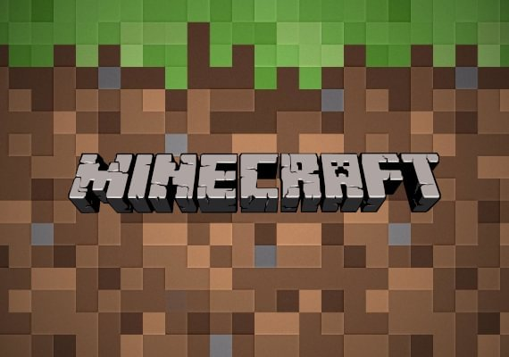

Nelson Philippe
Un étudiant, avec une soif d'apprendre inssaciable, le développement est sa passion.
Compétence
JAVA
HTML & CSS
PHP
JAVASCRIPT
Presentation
Je me nomme Nelson Philippe, j'ai 18 ans actuelement en terminal, je suis passioné par le développement et tout ce qui peut toucher à l'informatique en général. Après mes études j'aimerai devenir développeur et avoir le plus de connaissances possibles en rapport avec le métier, mon but est d'avoir des connaissances dans n'importe quelle language de programation.
Mes principaux centres d'intérêts sont le développement en java, le système administration, et le jeu vidéo. Je suis calme, j'aime prendre des décisions et le travail d'équipe, je sais écouté les autres et j'apprend beaucoup des critiques constructives que l'on peut me faire.
Projets
Slytaria
Le projet Slytaria est un futur serveur Minecraft entièrement développé par mon equipe et moi même, celui ci propose différents modes de jeux comme un faction magique, un skyblock et des mini-jeux classique comme innovent.
My Sql DB

Le projet MySqlDb est une api SQL qui permet à son utilisateur de simplifier l'utilisation SQL en proposant un système de model grâce au polymorphisme. Cette api supporte mariadb et MySQL classique.
MonsterSlayer
MonsterSlayer est un mini jeu Minecraft spigot, le but est de survivre aux différentes vagues de monstres qui apparaîtront, à la fin de chaque vague un bosse apparaîtra, vous devez le tuez pour passer a la vague suivante. Entre chaques vagues il est possible d'acheté de l'équipement grâce au pièce récolté en tuant les différents monstres. Un système d'instance a été intégrés il est donc possible de creer plusieurs partie sur le même serveur et sur le même monde ou différents mondes. Tout le plugin est entièrement configurable.
Experience

GitHub:https://github.com/XiliTra
J'ai commencé le développement à 14 ans, ce qui m'a permit de m'intéresser à cette activité. Lors de mon stage de 3ème j'ai pu observer différents corps de métier: la photographie, le graphisme et le métier de webmaster. J'ai commencé par apprendre sur openclassroom le C#. Par la suite, Je me suis intéressé un peu plus au java, langage plus orienté vers le jeu vidéo comme Minecraft par exemple, ce qui me permettais d'avoir des objectif pour apprendre tout en suivant une formation sur openclassroom. Après avoir finis cette auto-formation je me suis entraîné et j'ai beaucoup travaillé avec ce language pour acquérir mon niveau actuel. Cela fait maintenant 4 ans, que je développe, sans relâche,tout les jours. Au fur et à mesure, j'ai commencé à m'orienter vers d'autre langage comme le C, le JavaScript avec ou sans NodeJs; et depuis peu des langages web, comme le HTML et le CSS. Actuellement j'ai beaucoup d'aisance en Java, et je continues d'apprendre avec envie sur les langages cités précédemment !